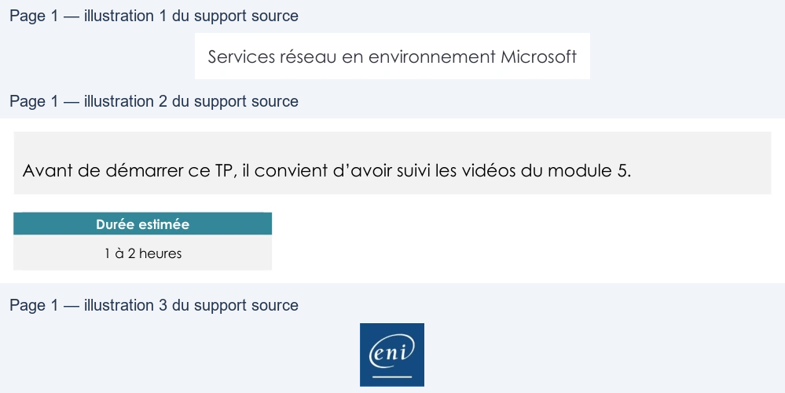

Transcription du document du Drive TSSR. La mise en forme est adaptée au Web ; les compléments IA du portail sont présentés séparément.
Services réseau en environnement Microsoft
TP du Module 05 – Le service DHCP
Avant de démarrer ce TP, il convient d’avoir suivi les vidéos du module 5.
Durée estimée
1 à 2 heures
Prérequis :
•
Avoir réalisé le TP précédent du Module 04.
Création des machines virtuelles :
•
Une machine virtuelle cliente Windows 10 sur le réseau VmNet10.
•
Une machine virtuelle serveur Windows 2019 Standard sur le réseau VmNet10.
Installation du service DHCP
•
Définir un nouveau plan d’adressage pour votre réseau VmNet10 avec :
o Une plage de 100 adresses pour les postes clients. o Les adresses statiques pour les serveurs. • Configurer le service DHCP sur le nouveau serveur Windows 2019 Standard pour :
o Fournir des adresses IP sur les postes clients. o Fournir l’ensemble des paramètres IP nécessaires aux postes clients. o Ne pas fournir les adresses IP prévues pour les serveurs (configuration
statique).
Un schéma de l’infrastructure devra être réalisé.
Paramétrage des clients :
•
Adapter les paramètres clients :
o Configurer une réservation pour le 2e poste client avec la 1re adresse IP de la
plage d’adresses définie.
•
Sur un poste client, utiliser la commande ipconfig pour :
o Renouveler le bail DHCP (sans perdre l’adresse IP obtenue). o Relâcher et obtenir une nouvelle adresse IP.
Page 1/1
© ENI – Tous droits réservés
